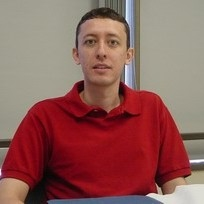

Rodrigo Cogni Principal Investigator
I am an evolutionary biologist with broad interests in ecology and evolution. After getting my BA degree in Biology and a Master degree in Ecology at Universidade de Campinas in Brazil, I went to Stony Brook University in the US to get my PhD in the group of Douglas Futuyma. At Stony Brook University I have also worked for two years as a postdoc in the laboratory of Walter Eanes. From Long Island I moved to another tiny island for a two-year postdoc in the group of Frank Jiggins at Cambridge University. In June 2014, I returned to Brazil to join the faculty of the Ecology department at Universidade de São Paulo.